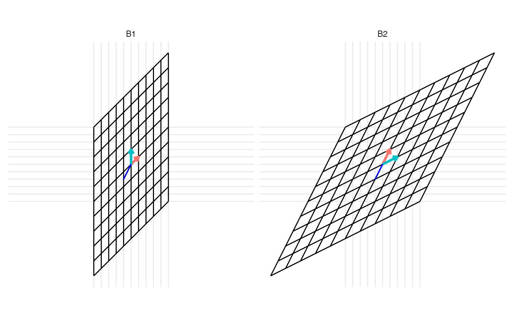

Plot a change of basis from B1 to B2
plot_change_basis(B1, B2)
| B1 | 2 by 2 matrix of the initial basis |
|---|---|
| B2 | 2 by 2 matrix of the initial basis |
An animation created by gganimate.
library(tidyverse) #> ── Attaching packages ─────────────────────────────────────── tidyverse 1.3.1 ── #> ✔ ggplot2 3.3.5 ✔ purrr 0.3.4 #> ✔ tibble 3.1.5 ✔ dplyr 1.0.7 #> ✔ tidyr 1.1.4 ✔ stringr 1.4.0 #> ✔ readr 2.0.2 ✔ forcats 0.5.1 #> ── Conflicts ────────────────────────────────────────── tidyverse_conflicts() ── #> ✖ dplyr::filter() masks stats::filter() #> ✖ dplyr::lag() masks stats::lag() if (requireNamespace("patchwork", quietly = TRUE)) { library(patchwork) } # create a 2D basis matrix B1 <- matrix(c(1, 1, 0, 2), 2, 2) # create a 2D basis matrix B2 <- matrix(c(1, 2, 2, 1), 2, 2) # create a vector with coordinates with respect to the standard basis x <- c(-1, -2) # plot the transformation of basis, and the intermediate transformation to the standard basis p1 <- plot_change_basis(B1, B2) + facet_wrap(~ time, labeller = labeller(time = c("1" = "B1", "2" = "B2"))) + geom_segment(aes(x = 0, xend = -1, y = 0, yend = -2), color = "blue") p2 <- plot_change_basis(B1, diag(2)) + facet_wrap(~ time, labeller = labeller(time = c("1" = "B1", "2" = "I"))) + geom_segment(aes(x = 0, xend = -1, y = 0, yend = -2), color = "blue") p3 <- plot_change_basis(diag(2), B2) + facet_wrap(~ time, labeller = labeller(time = c("1" = "I", "2" = "B2"))) + geom_segment(aes(x = 0, xend = -1, y = 0, yend = -2), color = "blue") # generate the plot using patchwork p1 / (p2 + p3) 